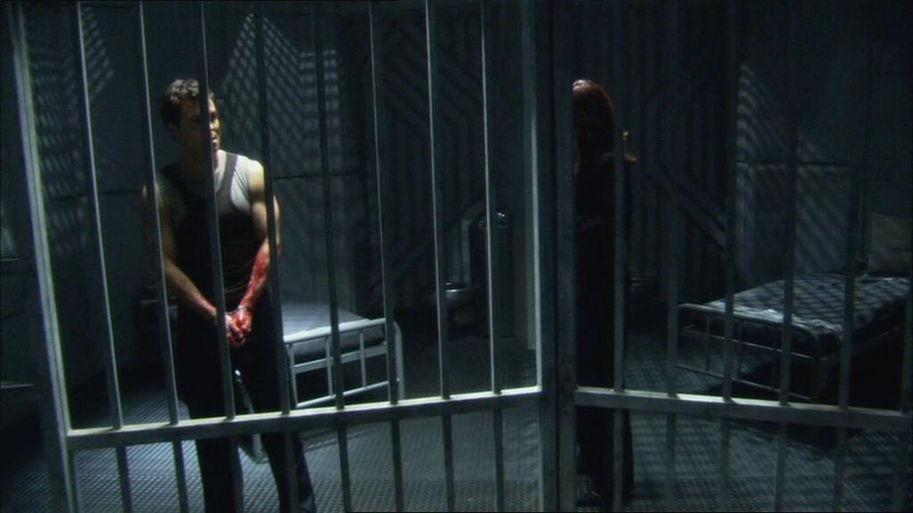

Cylon Agent Policy
In the event that a CDF agent encounters what they believe may be one of these Cylon Humanoid Agents, we want to have a plan of action. We must deal with the accused Cylon quickly and swiftly, while at the same time maintaining the rules and regulations of our Justice System.
When an individual is accused of being a Cylon Agent:
The individual must be immediately isolated from the rest of the group, and strictly monitored. If onboard a spaceship, the ship that the individual is detained on should be isolated from the rest of the Fleet. Guards monitoring the accused should be accounted for at all times.
The individual must be prohibited from any form of communication with others, and any security privileges must be immediately removed. If the individual is a member of the military or government, all access to systems and intel must be revoked as well.
This action must be performed swiftly and as covertly as possible to avoid potential information leaks.
The individual shall promptly be presented to a standard military court hearing. Questions will be asked regarding the individual’s actions and past to determine, to the highest possible degree of certainty, if the individual is indeed a humanoid Cylon Agent. The procedure must follow standard court protocol, including the statute of innocence until proven guilty. The court proceedings shall be informed by the primary witness.

Figure 6.4: Supsected Cylon Agents must be detained immediately
When an Individual is found guilty of being a Cylon Agent:
Those who are ruled not guilty by the courts shall be returned to their position.
In order to prevent the spread of rumors or false accusations, cases of Cylon Agent trials must be isolated from the public to the fullest extent possible. Parties found not guilty must refrain from telling others about the circumstances of their trial, under penalty of Treason. Alibis and alternative stories will be provided.
When it is unclear if an individual is a Cylon Agent:
If the trial results in a hung jury or otherwise indeterminate result, the individual must continue to be isolated from the general population. They must remain under guard and restricted from communication until a result is reached.
Conclusion
These are indeed trying times. With the future of humanity in jeopardy, we must make crucial decisions with haste and without hesitation.
While our methods of detecting a humanoid Cylon agent are imperfect, we have no other alternatives at this time. A highly classified military court is the most effective tool we can utilize at this time to deal with any potential Cylon agents. Not only can the court make an impartial decision, but it’s clandestine nature will help reduce panic.
We cannot afford to have people turn against each other at this time when we need to be strong together. We cannot allow the Cylons to destroy us.